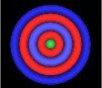

Here I explore various aspects of the Milo Wolff's Wave Structure of Matter model.
The best general reader source is: Exploring The Physics Of The Unknown Universe by Milo Wolff, 2nd ed., 1994. Here is the Mathematical Appendix to this book.
Also check out Milo Wolff's book Schrodinger's Universe: Einstein, Waves & the Origin of the Natural Laws.
Other websites, References, Papers and Bits from Books can be found with this link.
|  | I have posted what I think may be "problems" with the WSM model. (06-13-2008) |
| My calculations for the particle/anti-particle wave functions. (06-13-2008) | |
| Following Milo's calculations for some Special Relativity particle relations in WSM. (06-22-2008) | |
| Spherical Rotations are investigated. This motion of the space medium defines the "core" of the "particles". (06-03-2008) | |
| What is meant by CW and CCW? (06-03-2008) | |
| I extend spherical rotation to a 1/2-wave length. (06-03-2008) | |
| I attempt to explain what a particle and anti-particle are in the WSM model. (06-08-2008) |
Usage Note: My work is copyrighted. You may reference and use my work in non-profit projects but you may not include my work, or parts of it, in any for-profit project without my consent.